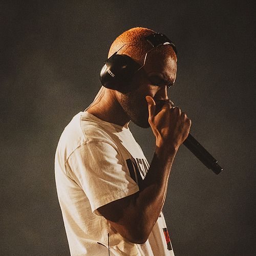
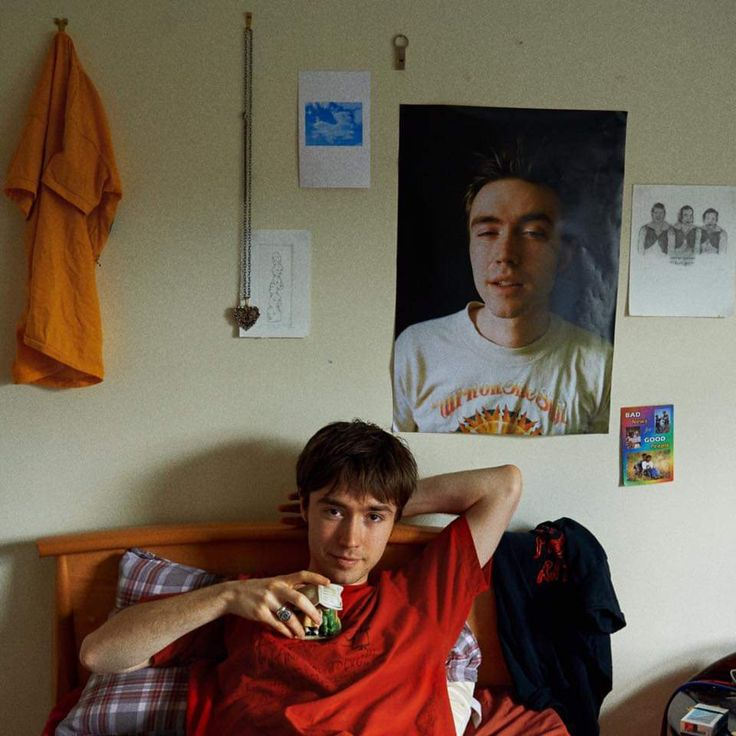
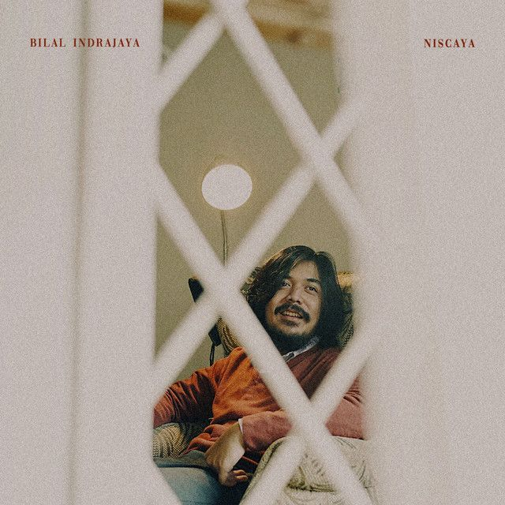
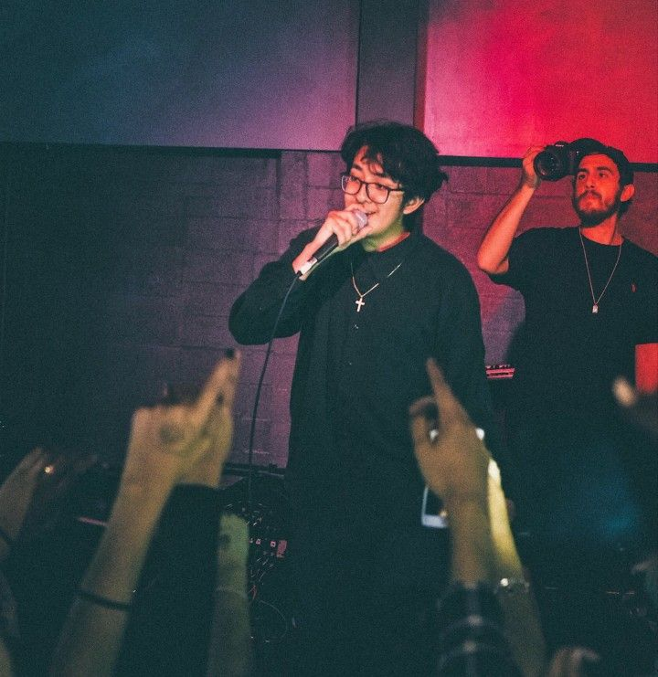

Ashton Dumar Norwill Simmonds, known professionally as Daniel Caesar, is a Canadian R&B singer-songwriter.
Daniel Caesar
R&B , Soul

Christopher Francis Ocean is an American singer, songwriter, and rapper. According to some music critics his works feature avant-garde styles and introspective, elliptical lyrics.
Frank Ocean
Neo soul

Daniel Baskara Putra, also known by Hindia (born 22 February 1994) is an Indonesian singer-songwriter, record producer and composer. Baskara is the vocalist of the music group .Feast. as well as the frontman of the band he formed, in 2019 entitled Lomba Sihir.
Hindia
Indonesian Indie

Matthew Jonathan Gordon Maltese is a British-Canadian singer-songwriter. His style blends elements from indie pop, indie rock, and chamber pop. Since releasing his debut single "Even If It's a Lie" in 2015, Maltese has released four studio albums, and four EPs.
Matt Maltese
Indie

Bilal Ahmad Indrajaya, S.Psi. (born 19 December 1995) is an Indonesian singer-songwriter from South Tangerang. Bilal started his professional music career by releasing a song entitled "Biar" in 2018.
Bilal Indrajaya
Indonesian Indie

Omar Banos, known professionally as Cuco, is a Mexican-American singer-songwriter and record producer from Hawthorne, California. His fame escalated after releasing "Lo Que Siento", which attracted over 260 million streams on Spotify alone.
Cuco
French Indie